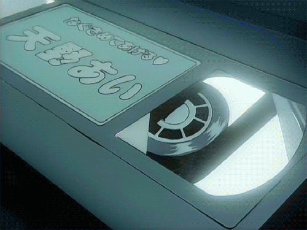

.jpg)
Hola soy Mussme Nancy Lopez Rivas
Estudiante en Ingeniería Química

Es un subgénero del pop que refiere a que tiene origen en Corea del Sur. Es la abreviación de la Korean Popular Music. Este género es la fusión del pop y la electrónica con géneros más modernos y el resultado es muy movido y lleno de energía.
Principales empresas en el kpop.
Las agencias de K-Pop no solo se encargan de capacitar a los futuros idols, ayudar con el debut y encaminar su trayectoria hacia el éxito

¿Qué es un idol?
Un idol coreano es un término usado para describir a un artista musical surcoreano firmado bajo una agencia de entretenimiento, cada idol al ser parte de un gropo se le otorga una posicion definida, las principales son.

Tiendas de mercancia oficial.
Weverse Shop.
Cokodive.
DongSong Shop.


“Para ser honesto, tengo miedo de caer y de defraudarte. Pero si eso requiere de toda mi fuerza, me aseguraré de estar contigo a tu lado. Aunque me caiga y me equivoque de nuevo, y esté todo cubierto de lodo, confío en mí porque soy un héroe”
Anpanman, de BTS

“No es nada especial. Puede ser tu juventud o cualquier otra cosa. Puede ser un periodo de tiempo en cual algo grande suceda…. pero el momento más hermoso de tu vida es cuando sientes ese momento verdaderamente con tu corazón y aceptas ese momento. Entonces desde el momento en que naces hasta el que mueres, toda tu vida puede ser hermosa”.
RM, de BTS.
“Llora fuerte una vez, luego mira al espejo y olvídate de ello. He llorado así antes y otros tendrán momentos como esos también. Anímate. No estás solo”
de SHINee.